Designer · AI agent manager · Shenzhen & Hong Kong
I design the system, then I run the agents that build it.
My goal: raise productivity with the efficiency of AI agents, built around what people actually need. Eight years in automotive HMI for Karma, BYTON and SF Motors, then programs for Toyota, Mitsubishi and SAIC. Today I run a cross-border trading company, and the software it runs on was specified, reviewed and shipped by me with a team of AI agents.
An ERP for a commodity trader, built by one GM and a team of agents.
Wellstar trades agricultural commodities from Thailand and Vietnam into China: about 20 million in annual revenue at a 3–5% margin, with a team of 20. I manage the business end to end. At those margins every hour and every number counts, so the system started with people, not software.
A real use case, in the order it happened
01listen
Interview
Sat with each team and mapped how work really moved: who asks whom, where Excel ends and WeChat begins.
interviews · workflow maps
02simplify
Fix the workflow
Removed handoffs and double entry before writing any code. The first win was process, not AI.
fewer steps, same team
03structure
Clear data
Agents turned scattered spreadsheets into one clear data structure, so the dashboards show insight, not rows.
templates → pipeline → dashboards
04automate
Agents at work
Agents now read email, ask vendors for quotations and bring the replies into the system.
email · quotes · WeCom
05next
Factory to customer
End-to-end supply tracking: one thread for every lot, from the factory through shipping and warehouse to the customer.
in planning
nas:8000/shipping.html
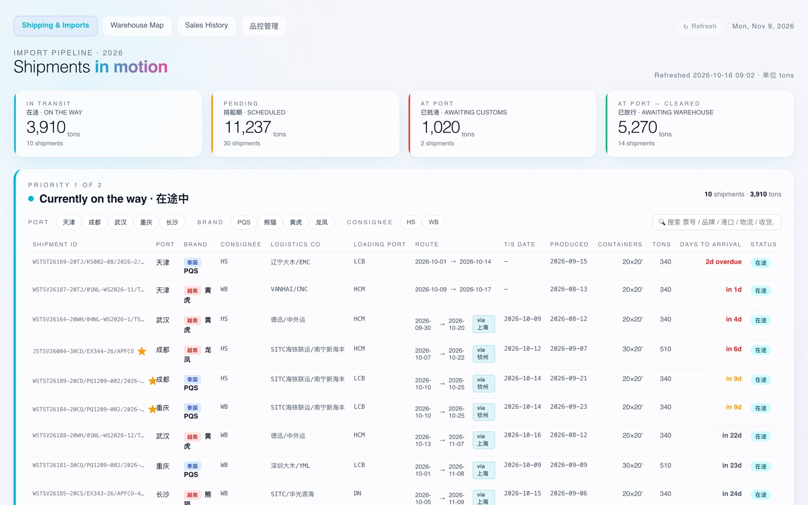
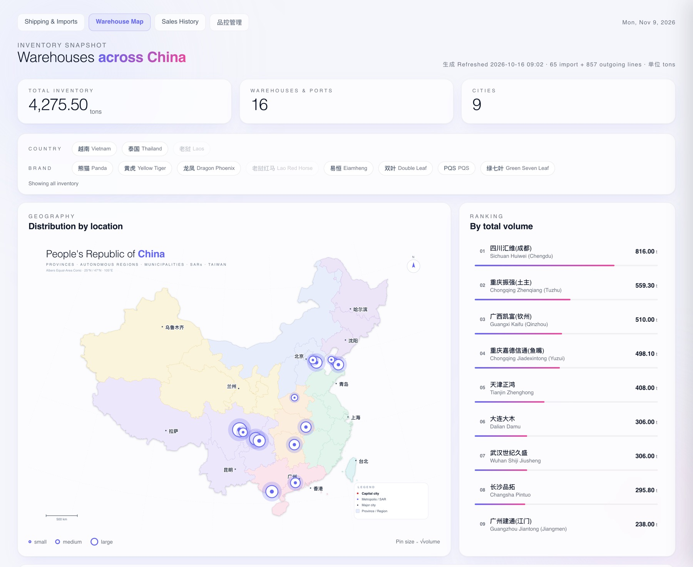
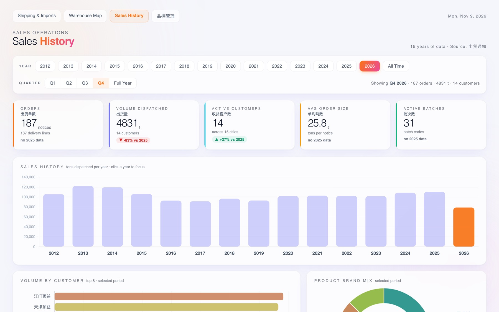
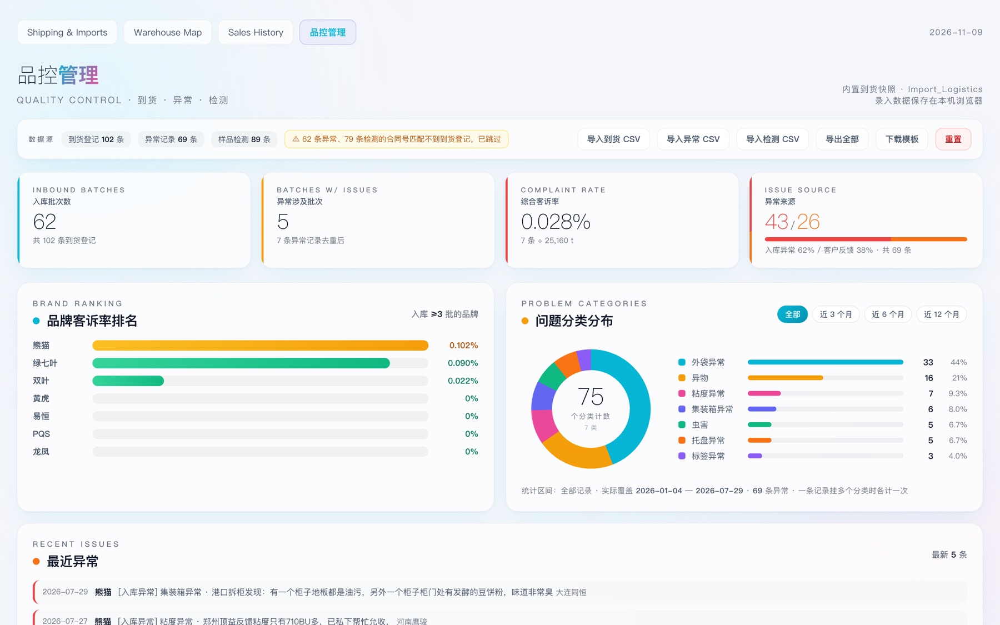
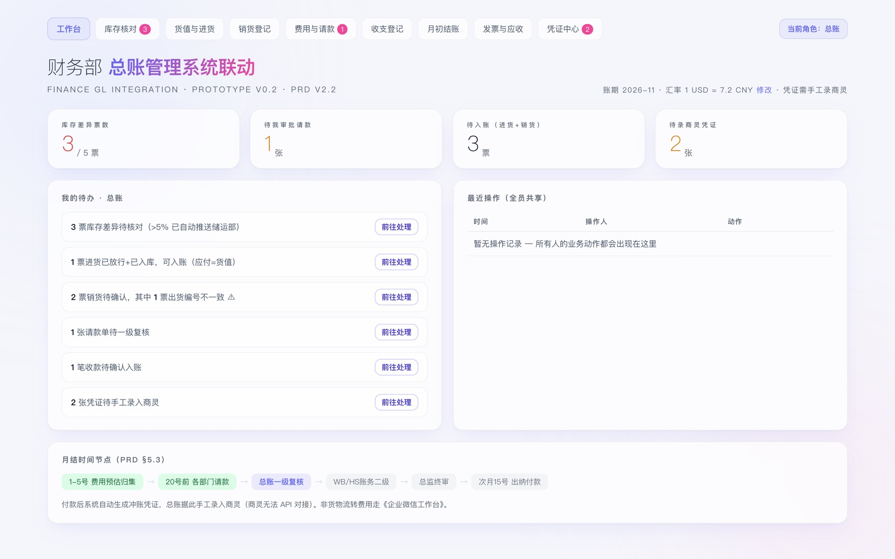
Every inbound container from loading port to warehouse: in transit, scheduled, at port, cleared, with days-to-arrival.1 / 5 · click to enlarge
Decision 01
Keep Excel as the source of truth
The team already lives in spreadsheets. Instead of forcing a new tool, a pipeline reads their templates and renders the dashboards. Adoption cost: zero.
Decision 02
One URL per role
Sales, logistics, finance and the stamp holder each get their own link, locked to what they can do. Each role lives in its own folder, so access is granted per folder on the NAS, not through a login screen nobody remembers.
Decision 03
Numbers must reconcile
Every refresh is checked against the source files. A deterministic validator flags drift, mismatched months and stale values before anyone sees a chart.
It started with one question: “How does a rocket fly?”
My three-year-old son asked it, and Anatomy is my answer: an interactive site I made for my children’s education. I built every machine as a 3D model, along with how it is used, so a kid can turn it, take it apart and make it work. Each page is one question, one model and one slider. Art direction is mine; the models, copy and fact-checking were built with agents.
anatomy / falcon9-parts
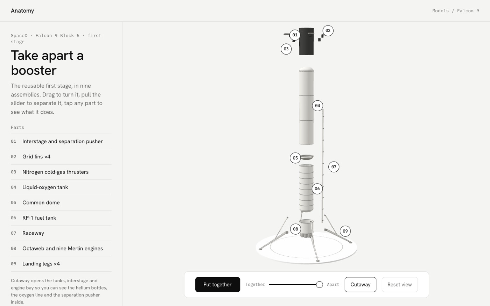
Take it apart: pull the slider and the booster separates into nine numbered parts. Tap any part to see what it does.Falcon 9
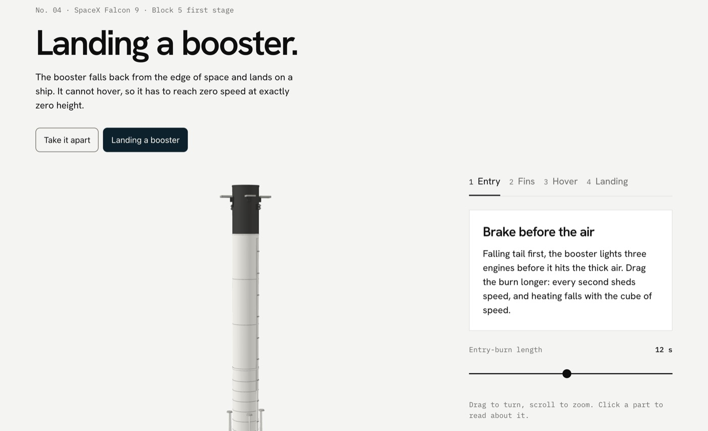
How does a rocket land on a ship?
Falcon 9 · drag the engine burn
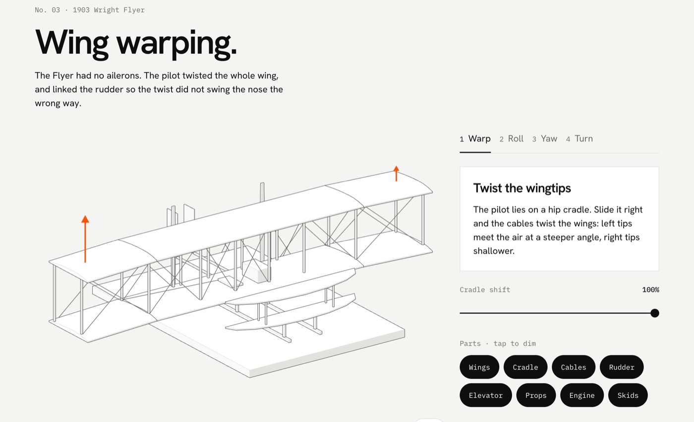
How did the first airplane turn?
1903 Wright Flyer · slide the pilot's hip cradle
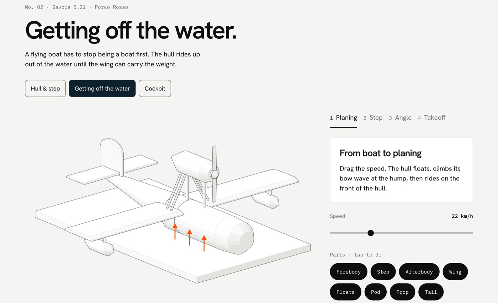
How does a boat turn into a plane?
Flying boat · drag the speed
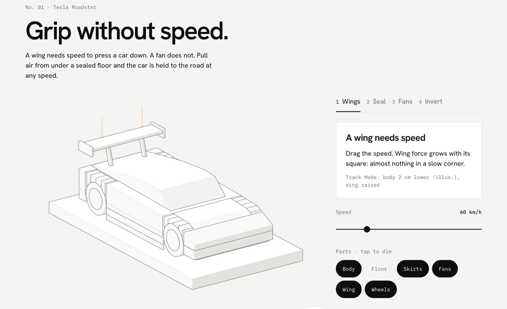
How can a car grip the road when it's slow?
Roadster · turn on the fans
Principle 01
One question per page
Every page starts from a question a kid would ask, answered in a sentence or two of plain words. The model does the explaining.
Principle 02
Learn by doing
Each idea is a gesture: drag a slider, turn the model, tap a part. Four short steps per machine, so the lesson never outruns attention.
Principle 03
Simple, never wrong
Models are checked against real references and every claim has a listed source. A kid's version can leave things out, but it can't make things up.
Principles03 · Design for an AI world
AI should make work feel lighter, not stranger.
Six rules I hold myself and my agents to, learned from automotive HMI, from running a trading company, and from building for my kids.
01
Start with people, not models
Interview first. Watch how the work actually moves. The need decides what gets automated, never the novelty.
02
Fix the workflow before adding AI
Automating a messy process only makes the mess faster. Simplify the steps, then let agents carry them.
03
Structure first, insight second
AI is only as clear as the data underneath. A clean structure is what turns records into decisions.
04
Agents draft, people decide
Agents fetch, compare and prepare. A person signs off on prices, money and anything that leaves the company.
05
Show the source
Every number reconciles and every claim is cited. Trust comes from being able to check, not from sounding sure.
06
Minimal, useful, with a little joy
Remove until it is clear. Make it refined enough to trust. Then leave one moment that makes people smile.
Method04 · Agent management
Managing agents is a design job.
Agents are fast and confident, and occasionally wrong. My job is the same as it was with engineering teams in Tokyo and Shanghai: write a clear brief, review the work against real users, and never accept a number I haven't checked.
01brief
Specify
A PRD with success criteria before any code. Short, dated, written in the team's language.
PRD_stock_transfer_转库.md
02build
Delegate
Agents build in parallel on separate files. Surgical edits only; nothing outside the brief.
claude code · grok · subagents
03review
Critique
Nielsen heuristic reviews on the live system, severity-rated, with concrete fixes.
UX启发式评估_实机.md · sev 1–4
04verify
Reconcile
Totals checked against source files. A dedicated QC validator checks each refresh for drift.
wellstar-qc · drift 0.0
05remember
Record
Decisions, traps and root causes go into memory files, so the next session starts smarter.
AGENTS.md · MEMORY.md · playbooks/
Agent
Owns
Claude Code
Primary builder: pipeline, FastAPI service, role pages, UX reviews
Grok
Parallel workspace for personal products, with shared rules and playbooks
WeCom agents
Ask forwarders for shipping rates and bring quotes back to the team
Subagents
Research, exploration and QC checks, kept out of the main context
Me
Briefs, taste, priorities, sign-off — and every number that leaves the building
MEMORY.mdexcerpt
## Re-baselined
The baseline is a snapshot of current stock,
not an opening balance. The cutoff must move
with it.
Why: at the old cutoff, July sales were
deducted from stock that already netted
them out. Totals inflated by ~40%.
How to apply: when a new baseline
arrives, first ask as of when it is true.
Never link one without asking.
Selected work05 · 2017–now
Things I've designed, and things I've had built.
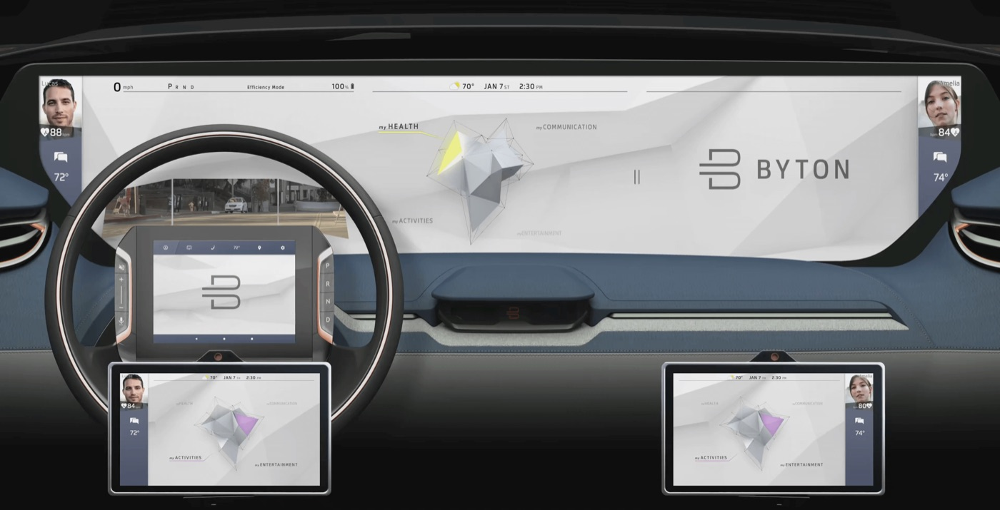
BYTON concept car
2017–2018 · CES 2018
A display that runs the full width of the dashboard, controlled by hand gestures. I designed the gesture interaction model, built the front end in Unity, worked between the design and marketing teams to ship it for CES, and localized the system for China.
gesture interactionUnityHMI
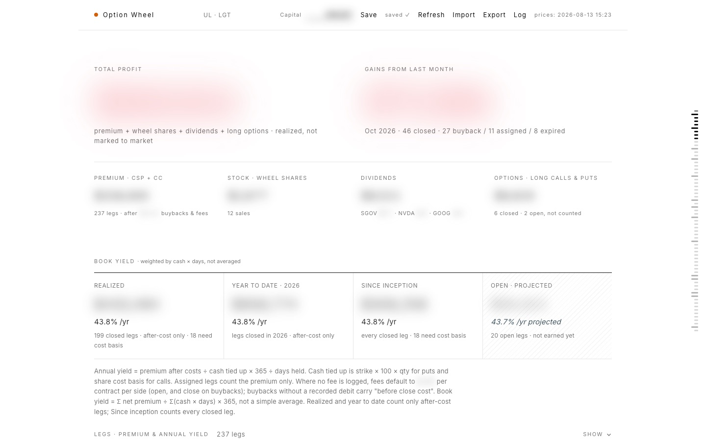
Option Wheel
2026 · trading analytics
Analytics for my own options trading: cash-secured puts and covered calls. Every leg, its premium and its true annual yield, weighted by cash and days held, with live prices to flag assignment risk. White field, one vermillion number.
data designfinancebuilt with agents
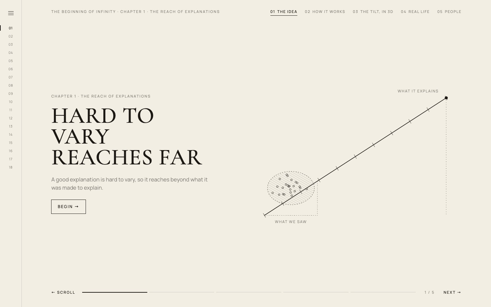
Interactive books
2026 · The Beginning of Infinity
I have more books than time to read them, so I turn the important ones into interactive pages. David Deutsch’s book becomes 18 chapters, one idea each, with diagrams and 3D models you can scroll, tilt and test.
editorial3Dbuilt with agents
WeCom rate agents
2023–now · automation
Agents inside WeCom that send shipping-rate inquiries to forwarders, collect the replies and put a comparison in front of the logistics team — work that used to be a morning of messages.
agentsPythonconversation design
Experience06 · 2011–now
Seven places, three languages. Designer by training, manager who delivers.
2023–now
Wellstar Trading — General Manager
Cross-border agri-commodity trade, Thailand and Vietnam into China. About 20 million in revenue at a 3–5% margin. I manage the business end to end and lead a team of 20, taking each plan from decision to delivery. I also built its automation layer with AI agents.
2019–2023
Rightware — Project Manager
Kanzi HMI programs for Toyota, Mitsubishi and SAIC. On site in Japan and China every two weeks, bridging a Finnish product team and Asian engineering orgs.
2018–2019
SF Motors — Senior UI/UX Designer
Interaction model and information architecture for infotainment and cluster. Four patents filed.
2017–2018
BYTON — HMI UI Specialist
Shipped the gesture interaction model for the CES 2018 concept car; front-end in Unity. Localized infotainment for China.
2015–2017
Karma Automotive — UX Technical Designer
Next-gen infotainment in Kanzi, wired to live vehicle signals. User research, usability tests, 3D and motion prototypes.
2011–2012
Japanese Government (JET) — CIR
International programs for residents and newcomers in a Chiba local government.
About07
I like tools that make complicated things easier to understand.
I turn insight from user research into features. My design philosophy: minimal, useful, sophisticated, with a little joy. Today I work with AI agents to turn what I read and research into working products.
UC Berkeley, then a year at Kyoto University: three years in Japan in all. Based in Shenzhen and Hong Kong, often on the ground in Shanghai, Thailand and Vietnam.
DesignResearch, interaction, IA, HMI
InterestsVC · education · finance
AgentsClaude Code, Grok, WeCom bots
BuildPython, FastAPI, three.js, Kanzi
ReviewNielsen heuristics, QC validators
LanguagesEnglish · 日本語 · 中文
Available for conversations
Have a system that needs designing — and agents that need managing?